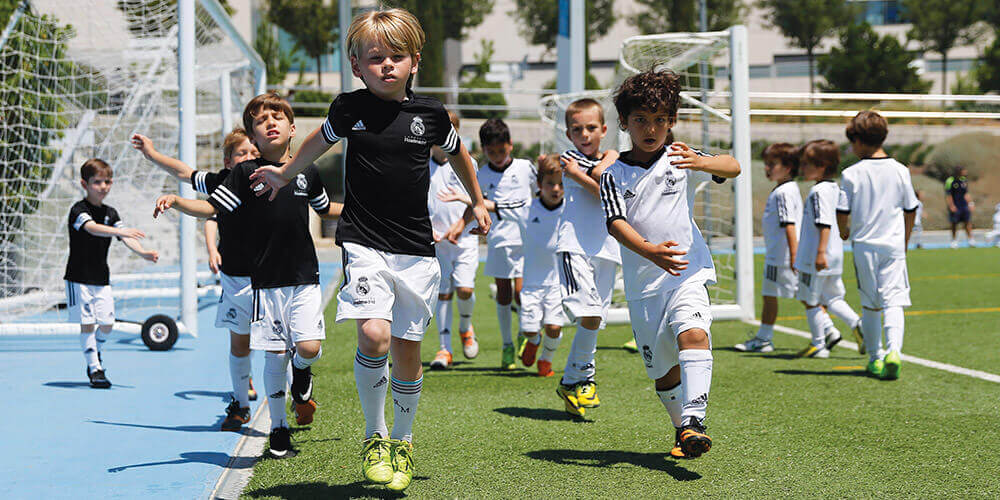
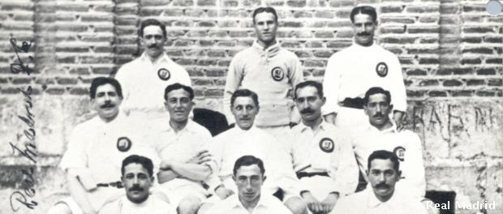
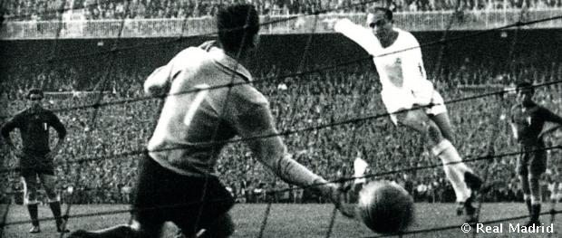

Football History
Three years after its foundation, in 1905, Madrid FC won its first title after defeating Athletic Bilbao in the Spanish Cup final. The club became one of the founding sides of the Royal Spanish Football Federation on 4 January 1909, when club president Adolfo Meléndez signed the foundation agreement of the Spanish FA. After moving between grounds the team moved to the Campo de O'Donnell in 1912. In 1920, the club's name was changed to Real Madrid after King Alfonso XIII granted the title of Real (Royal) to the club.
In 1929, the first Spanish football league was founded. Real Madrid led the first league season until the last match, a loss to Athletic Bilbao, meant they finished runners-up to Barcelona. Real Madrid won its first League title in the 1931–32 season and retained the title the following year.
On 14 April 1931, the arrival of the Second Spanish Republic caused the club to lose the title Real and went back to being named Madrid Football Club. Football continued during the Second World War, and on 13 June 1943 Madrid beat Barcelona 11–1 in the second leg of a semi-final of the Copa del Generalísimo, the Copa del Rey having been renamed in honour of General Franco. It has been suggested Barcelona players were intimidated by police, including by the director of state security who "allegedly told the team that some of them were only playing because of the regime's generosity in permitting them to remain in the country." The Barcelona chairman, Enrique Piñeyro, was assaulted by Madrid fans. However, none of these allegations have been proven and FIFA and UEFA still consider the result as legitimate. According to Spanish journalist and writer, Juan Carlos Pasamontes, Barcelona player Josep Valle denied that the Spanish security forces came before the match. Instead, at the end of the first half, Barcelona coach Juan José Nogués and all of his players were angry with the hard-style of play Real Madrid was using and with the aggressiveness of the home crowd. When they refused to take the field, the Superior Chief of Police of Madrid appeared, identified himself, and ordered the team to take the field.
 